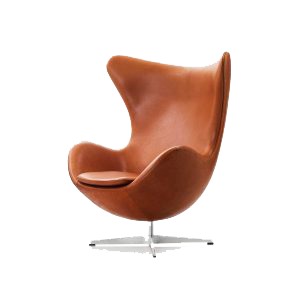

Dale 1982
Dale 1982
Kasper Siig
Pris 48.000 kroner
Lænestolen, DALE 1982 af Kasper Siig, er intet mindre end et verdensberømt ikon, der oprindeligt blev tegnet til Hotel Radisson SAS Royal i København.
Designår 1958
Designer Arne Jakobsen
Bredde 86 cm
Dybde 89 cm
Højde 107 cm
Materialer